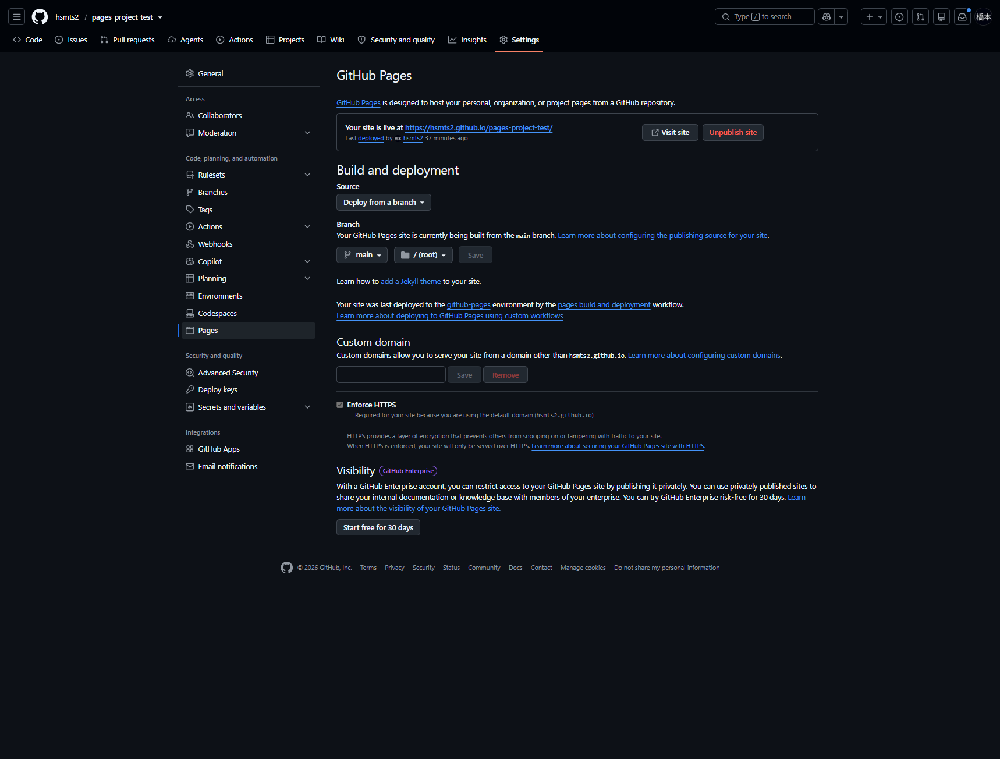

GitHub Pages
GitHub Pagesのサイト種類とリポジトリ名の条件、公開元の設定を整理する
GitHub Pagesの種類
<USERNAME>.github.ioというリポジトリ名が必要なのはユーザーサイトの場合。プロジェクトサイトは任意のリポジトリ名で公開できる
| 種類 | リポジトリ名 | 標準の公開URL | 作成数 |
|---|---|---|---|
| ユーザーサイト | hsmts2.github.io | https://hsmts2.github.io/ | 個人アカウントにつき1サイト |
| Organizationサイト | <ORGANIZATION>.github.io | https://<ORGANIZATION>.github.io/ | Organizationにつき1サイト |
| プロジェクトサイト | 任意の名前（例：sample-site） | https://hsmts2.github.io/sample-site/ | リポジトリにつき1サイト |
任意のリポジトリを公開する条件
リポジトリ名は任意でも、HTMLをpushするだけで自動的にWebサイトになるわけではない。Pagesの公開元設定とデプロイが必要
- 利用プランとリポジトリの公開範囲がPagesの対象であることを確認
- 公開元に入口となる
index.htmlを配置。Jekyllを利用する場合はindex.mdやREADME.mdも入口として使用可能 - リポジトリの
Settings＞Pagesで公開元を設定 - ビルド・デプロイ成功後に表示される公開URLで確認
GitHub Freeでは公開リポジトリが対象。GitHub Pro・Teamなどでは非公開リポジトリも対象になるが、ソースが非公開でもPagesのサイトまで非公開になるとは限らない。公開前に掲載内容を確認
HTML・CSS・ブラウザで動作するJavaScriptなどの静的サイトを公開可能。PHPやPythonなどのサーバー側処理をGitHub Pages上で実行することはできない
サイトの種類とデプロイ方式は別
ユーザーサイト・プロジェクトサイトはURLと所有単位の分類。次の2つはファイルをビルド・公開する方式の分類で、別の軸で選択する
| 公開方式 | 指定するもの | 用途 |
|---|---|---|
Deploy from a branch | 公開ブランチと/(root)または/docs | 配置済みの静的ファイルやJekyllサイトを公開 |
GitHub Actions | ビルド・デプロイ用ワークフロー | 独自のビルド工程で生成したサイトを公開 |
ブランチ方式でmain・/docsを選ぶ場合、入口はdocs/index.htmlに配置。プロジェクトサイトの公開URLは/sample-site/から始まるため、CSS・画像へのリンクもその配下で解決されるように記載
用途による使い分け
| 用途 | 選択の目安 |
|---|---|
| 自分のプロフィール・ポートフォリオ・各サイトへの入口 | ユーザーサイト |
| ドキュメント・ツール・作品などをリポジトリ単位で公開 | プロジェクトサイト |
機能の優劣ではなく、公開内容の単位とURLで選択する。ドキュメント集を独立して管理する用途には、プロジェクトサイトが合う
DocumentationをGitHub Pagesで公開する場合はプロジェクトサイトに該当。ただし、現在のDocumentationはCloudflare WorkersのURLで公開しており、今回のGitHub Pagesとは公開基盤が異なる
リポジトリ作成後のPages設定
公開元を設定する画面は、リポジトリのSettings ＞ Pages。以下はユーザーサイトとプロジェクトサイトに共通する設定手順
1. リポジトリのmainブランチに、公開するファイルがpush済みであることを確認
/
├── index.html
├── style.css
├── .nojekyll
└── README.md入口はindex.html。style.cssは見た目の指定、.nojekyllはJekyll処理を省略するためのファイル。README.mdは説明用で、今回のHTML公開に必須ではない
JekyllはMarkdownやテンプレートからHTMLを生成する仕組み。ブランチから公開する場合は標準でJekyllによる処理が入るため、完成済みのHTML・CSSをそのまま配信したい場合は、公開元の最上位に.nojekyllを配置する
ファイルの存在が「Jekyllを使わない」という目印になるため、中身は空でよく、設定値の記入は不要。名前は先頭のドットを含む.nojekyllで、.nojekyll.txtにはしない
公開元が/ (root)ならリポジトリ直下、/docsならdocs/.nojekyllへ配置してcommit・pushする。このファイルだけでPagesが有効になるわけではなく、下記の公開元設定も必要
今回の2サイトは完成済みHTMLを使うため配置済み。JekyllでMarkdownの変換やテーマを利用したい場合は配置しない。独自のGitHub Actionsで作るサイトは、そのワークフローに応じて判断する
2. リポジトリのSettingsタブを選択し、左側のCode, planning, and automation内のPagesを押下
設定画面：ユーザーサイトのPages設定 ／ プロジェクトサイトのPages設定

3. Build and deploymentのSourceプルダウンからDeploy from a branchを選択し、Branch欄のブランチとフォルダを次の値に設定
| 項目 | 今回の設定値 | 意味 |
|---|---|---|
Source | Deploy from a branch | ブランチ内のファイルを公開元にする |
Branch | main | mainへpushした内容を公開する |
| フォルダ | / (root) | リポジトリ直下のindex.htmlを公開する |
4. Branch欄のSaveボタンを押下。設定済みで変更がない場合、添付の設定画面のようにボタンは無効になるため、再保存は不要
5. Custom domainは空欄のままにし、Enforce HTTPSが有効であることを確認。github.ioの標準ドメインを使うため、独自ドメイン購入・DNS設定・CNAMEファイルは不要
6. Actionsタブを選択し、pages build and deploymentの完了を確認。ブランチ方式でも、GitHubが用意するActionsの実行履歴が表示される
7. Settings ＞ Pagesへ戻り、Your site is live atのURLを確認してVisit siteボタンを押下
| サイト | 公開URL |
|---|---|
| ユーザーサイト | https://hsmts2.github.io/ |
| プロジェクトサイト | https://hsmts2.github.io/pages-project-test/ |
設定後はmainの公開元ファイルを変更してpushすると再デプロイされる。今回のような配置済みHTMLの公開では、自作のActionsワークフローや公開専用トークンを追加する必要はない